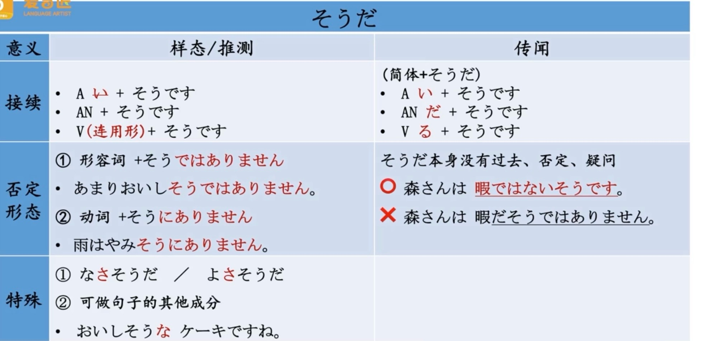
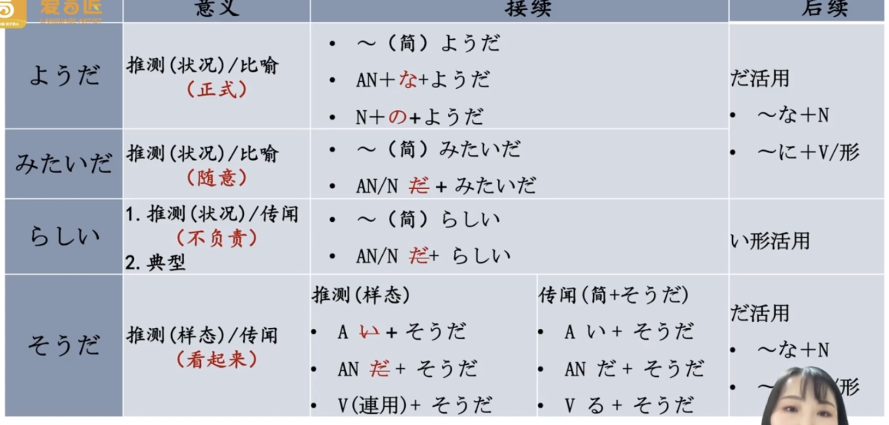

ついたち 1日
ふつか 2日
みっか 3日
よっか 4日
いつか 5日
むいか 6日
なのか 7日
ようか 8日
ここのか 9日
とおか 10日
じゅういちにち 十一日
じゅうよっか 14日
じゅうしちにち 十七日
じゅうくにち 十九日
まず 次に また、それて、さらに 最後に
打算：つもり
决定：ことにしました、ことになりました
推算：でしょう
为了：ために、ように
好像、可能：はず、みたいだ、ようだ、そうだ、らしい
后悔语气：でしまう=じゃう、てしまう=ちゃう
いかにも：符合特征，确实。いかにも〜らしい
絶対に：绝对，一定
せっかく：好不容易，难得
まるで：好像，まるで〜ように
ばかり：
た＋ばかり ーー 刚刚，才。
连用+ばかり ーー 光、尽、只、仅、反复、总是
数量词＋ばかり ーー 大约、左右
ずっと：
| 表达 | 含义 | 语气 | 例 |
|---|---|---|---|
| ですから | 因为（正式） | 中性 | 忙しいですから、無理です。 |
| だから | 所以（口语） | 直接 | だからやめたんだよ。 |
| なの | 解释（女性化） | 柔和 | これ、好きなの。 |
| ですもの | 强调理由（撒娇） | 可爱 | だって楽しいですもの！ |
まま：理应改变的状态未改变
はず：表示确信的推断。“理应”
のに：明明，尽管
くれる：他人主动给予
もらう：我主动索取
| 动词 | 方向性 | 主语 | 授予方助词 | 接受方助词 | 主语视角 | 尊敬语 | 谦让语 |
|---|---|---|---|---|---|---|---|
| もらう | 接受 | 接受者 | から/に | が/は | が・は他人主动给我 | いただく | - |
| くれる | 给予（受益） | 授予者 | が/は | に | に・から被动接受或主动请求 | くださる | - |
| あげる | 给予 | 授予者 | が/は | に | 给他人 | さしあげる | やる（对动植物） |
せっかく：好不容易
せっかく教えてあげたのに、彼は全部忘れてしまいました。
ながら：一边做某事 ます形+ながら＋V
たり：
を ＋ AN＋する 他动词
が ＋ AN＋なる 自動词
そうだ らしい


| 语法结构 | 接续方式 | 中文意思 | 主要功能 |
|---|---|---|---|
| からは | 名词/动词普通形 + からは | 既然...就... | 强调前提后的决心或必然结果 |
| からが | 名词 + からが | 从...开始就... | 强调起点或最初状态 |
| にまで | 名词 + にまで | 甚至到... | 表示范围/程度的极端延伸 |
| とまで | 名词/句子 + とまで | 甚至说... | 引用极端评价或传言 |
| 表达 | 假名 | 词性 | 中文意思 | 主要用法 | 例句 |
|---|---|---|---|---|---|
| あと | あと | 名词/副词 | 之后/剩余 | 时间/顺序的后续 | あと10分ある |
| あとの | あとの | 连体词 | 之后的... | 修饰名词 | あとの人は待って |
| あとで | あとで | 副词 | 之后（做） | 动作的时间顺序 た＋あとで | あとで食べる |
| 後を | あとを | 名词+助词 | 后续部分 | 接续特定动词 | 後を継ぐ |
| 表达 | 假名 | 词性 | 中文意思 | 核心区别 |
|---|---|---|---|---|
| たい | たい | 愿望助动词 | 想要（做某事） | 接动词表达行动愿望 ます形+たい |
| 欲しい | ほしい | 形容词 | 想要（某物） | 直接接名词 |
| 词类 | 连接形式 | 例句 | 中文 |
|---|---|---|---|
| 一类形容词 | く + なります | 寒くなります | 变冷 |
| 二类形容词 | に + なります | 静かになります | 变安静 |
| 动词 | ように + なります | 泳げるようになります | 变得会游泳 |
| 时态类型 | 结构 | 意义 | 例句 |
|---|---|---|---|
| まだ + 否定形 | まだ～ません/ない | 尚未（未完成） | まだ食べていません |
| まだ + 持续形 | まだ～ています | 仍在持续 | まだ雨が降っています |
| まだ + 过去形 | × まだ～ました | 错误用法 | × まだ終わりました |
| 接续词 | 假名 | 词性 | 中文对应 | 功能 | 语气 |
|---|---|---|---|---|---|
| けれども | けれども | 接续助词 | 但是/不过同が | 表转折 | 委婉 |
| それでは | それでは | 接续词 | 那么 | 表转换 | 正式 |
| そして | そして | 接续词 | 然后/而且 | 表并列/递进 | 中性 |
| だが | だが | 接续词 | 但是 | 表转折 | 强硬 |
| 语法形式 | 接续方式 | 主要功能 | 语气特征 | 例句 |
|---|---|---|---|---|
| ないで | 动词ない形 + で | ① 否定中顿② 禁止请求 | 中性/直接 | 食べないで出かける |
| なくて | 动词ない形 + くて | ① 原因理由② 并列否定 | 消极/解释 | 食べなくてお腹が空いた |
ではなくて、ではないで
关于判断的表达：
表断定：だ（第一课）
避免断定：だろう・でしょう（第26课）・と思う（第24课）
表可能：〜かもしれない（第26课）
表确信：〜はずだ（第42课）
表样态推测：そうだ（第33课）
表状况推测：ようだ、みたいだ、らしい（第44课）
表传闻：そうだ（第32课）・らしい（第44课）